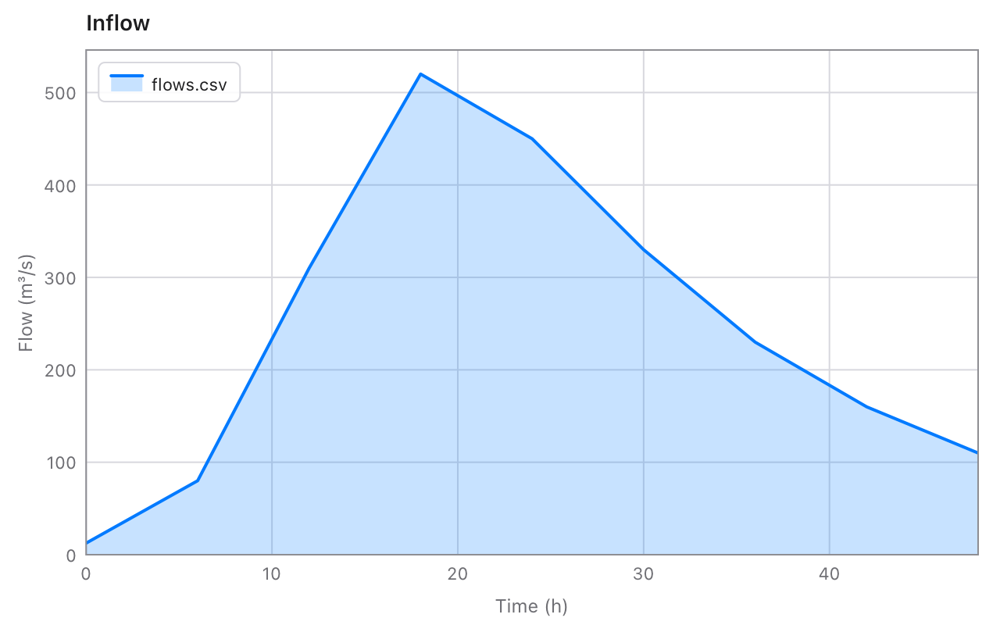

Quoted fields with commas, quotes and line breaks in them, any separator, a header to find columns by name, and columns read as numbers. A broken quote is an error that says where, not a silently wrong table.
A field in quotes may hold the separator, line breaks, and quotes written twice.
let rows = try csv.parse("name,quote\nAnn,\"She said \"\"hi\"\", then left\"\n")
print(rows)
[["name", "quote"], ["Ann", "She said \"hi\", then left"]]
Mistakes say where
A quote that's never closed, or text after a closing quote, is a failure with its line and column. lenient: true reads such files as Python does by default.
match csv.parse("id,name\n7,\"Ann\n8,Ben\n") {
.ok(rows) -> print(rows)
.failure(e) -> print(e.message)
}
line 2, column 3: this quote is never closed
Files from Europe
separator: "" guesses the separator; decimalComma reads 1.080,25 as 1080.25.
let eu = try csv.table("Zeit;Abfluss\n0;12,5\n6;1.080,25\n", separator: "")
print(eu.numbers("Abfluss", decimalComma: true) ?? [])
[12.5, 1080.25]
Writing
A field gets quotes only when it needs them, with its own quotes doubled, so any program reads it back as it was.
var t = csv.Table(header: ["station", "note"])
t.append(["Angat", "spill, gate 3"])
t.append(["Ipo", "said \"normal\""])
print(t.text())
fromColumns turns columns of numbers into a table ready to save.
let out = csv.fromColumns(["t", "q"], [[0, 6, 12], [12.5, 80, 310.25]], decimals: 2)
print(out.save("out.csv"))
true
out.csv
t,q
0.00,12.50
6.00,80.00
12.00,310.25
With chart
NaN breaks a line in chart, so a column with gaps plots as it should. Read a file, plot it, save it:
import csv
import chart
fn main() {
let t = try csv.read("flows.csv")
var c = chart.Chart(title: "Inflow", xLabel: t.header[0], yLabel: t.header[1])
c.area(t.numbersAt(0), t.numbersAt(1), name: "flows.csv")
print(c.savePNG("flows.png"))
}

Checked against Python
The reader is a port of the steps in Python's csv module, and a script runs thousands of texts through Python and saves the results for the tests to compare against: tricky ones written by hand, random ones of commas, quotes, line breaks and emoji, each with different separators, quotes and settings, mistakes included.
6,392texts read exactly as Python reads them
1,500sets of rows written as Python writes them, and read back
~0.04 sto read a 4.3 MB file of 100,000 rows
3files of Tessel, nothing else to install
Reference
Reading
Function
Gives
csv.read(path, separator:, header:)
The file as a Table, or a failure saying why: no such file, not UTF-8 text, or a quote that's wrong, with its line and column.
csv.table(text, separator:, header:)
The same, from text.
csv.parse(text, separator:)
The rows as lists of fields, [[String]], with no header. A blank line is an empty row.
csv.guessSeparator(text)
The separator the text most likely uses: ,; tab or |.
separator is "," unless you say: any one ASCII character, or "" to guess. Lines may end with \n, \r\n or \r, and a byte order mark at the start is left out. Also: header: false, lenient: true, skipSpaces: true and quote: "'".
Tables
Method
Gives
column(name)
The column's fields, or nil when there's no such column.
numbers(name, decimalComma:)
The column as [Float], NaN where a field is blank or isn't a number.
columnAt(i), numbersAt(i)
The same, by the column's index.
index(name)
The column's index, or nil.
value(row, name)
One field: "" when the row is too short, nil when there's no such row or column.
record(row)
A row as [String: String], from column name to field.
append(row)
Adds a row.
text(separator:, lineEnding:, quoteAll:)
The table as CSV text.
save(path, …)
Saves it as a file, and returns whether it worked.